To fit a neural field toa 2D image, the goal is to optimize a neural network (muli-layer perceptron (MLP)) such that it learns a mapping from 2D pixel coordinates (u, v) to the RGB values of an image. The neural network architecture can be found below.
MLP Architecture:
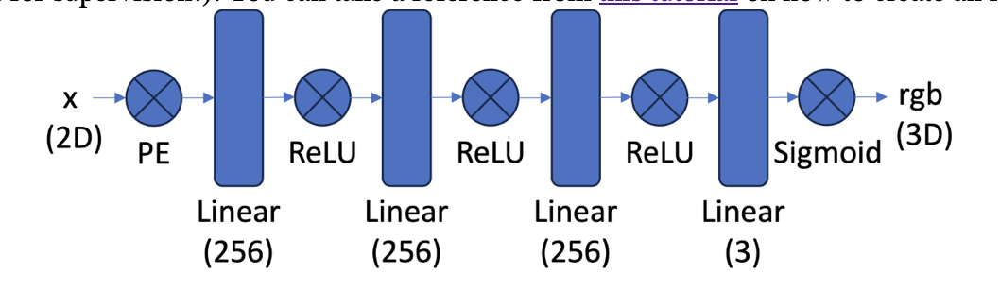Positional Encodings:
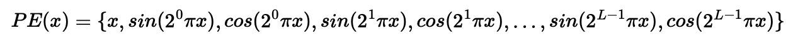For all 2D coordinates in the picture that we input to the network, we first get their positional encodings. The reason for that is 2 dimensions are simply now enough and we need sinusoidal encodings with frequency L = 10. The output of this network is predicted RGB values for each pixel. The target is the ground-truth RGB values extracted from the image. For efficiency purposes, during training, at each iteration, random subsamples of pixels are sampled. the network optimizes MSE between the predicted RGB and the ground truth RGB values. We want PSNR as high as possible since as MSE decreases, PSNR increases. Another way to interpret this is that the noise passed through the neural channel is minimized.
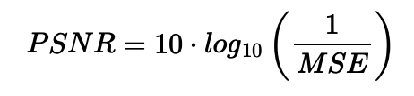The default parameters for training are 2000 iterations, 10000 batch size, learning rate of 1e-2, frequency L = 10, and channels sizes same as in the network architecture. The results for the test image are below. The final PSNR we achieved was 26.7 which is not bad.
We then varied some of the hyperparameters to model the behavior of the model with different hyperparameters. We first tested two different learning apart from the baseline which is 1e-2, [1e-4, 1e-1]. 1e-4 is a slower learing rate, so without increasing the number of training iterations, we shouldn't expect a reconstructed image with better resolution. This is confirmed by the results with learning rate = 1e-4 below.
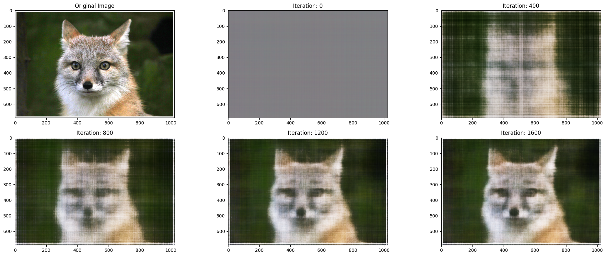 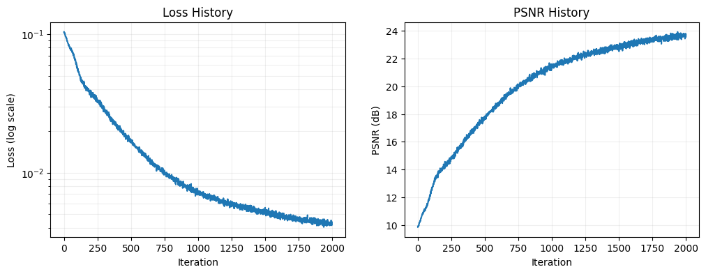As can be seen from the above images, compared to the learning rate of 1e-2, at the same iteration, we get a reconstructed image with lower quality, which is because of the slower learning. Below are the results for learning rate 1e-1:
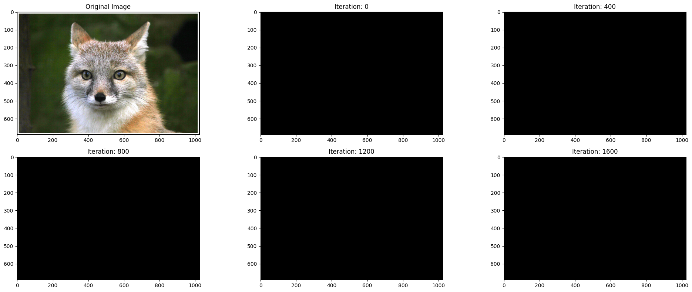 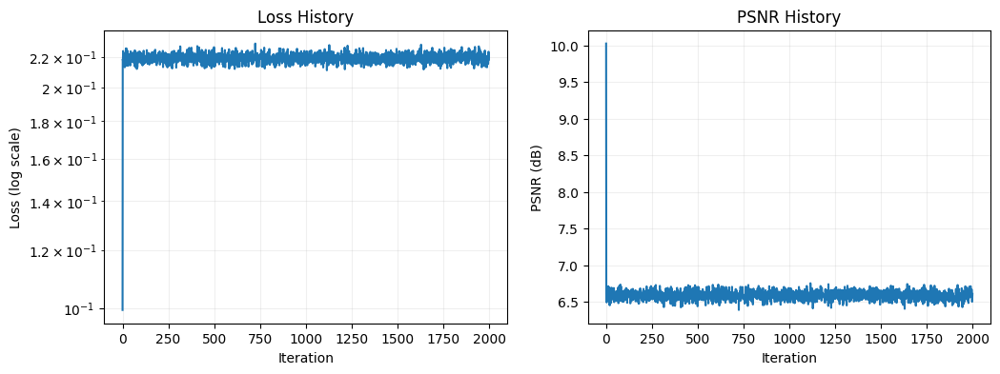As expected, a learning rate this high quickly and incorrectly converges to 0, which is the value for black in RGB, which results in a totally wrong reconstructed image.
Then we varied frequency L. Namely, apart from the baseline L = 10, we tried values in [2, 15]. The results for L = 2 is below:
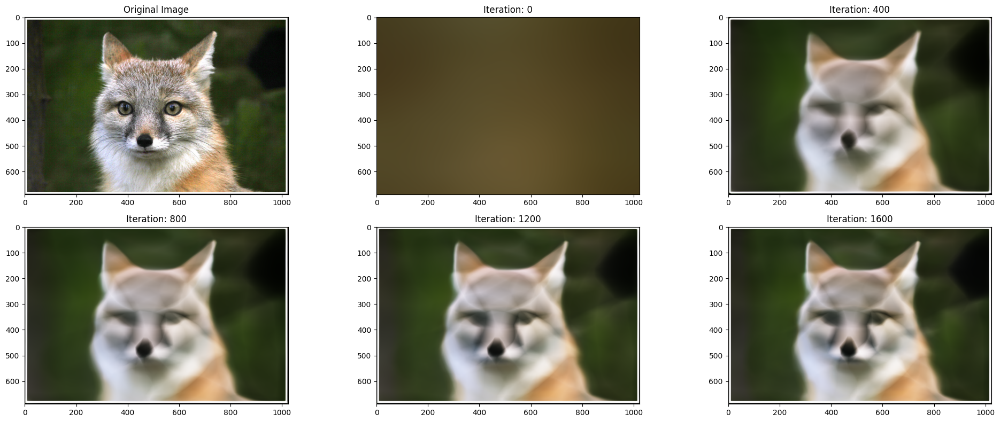 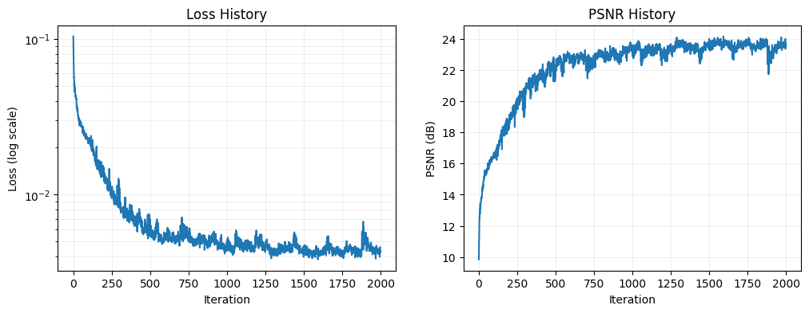This is an interesting result. Lowering the frequency acts as a low pass filter, namely a Gaussian Blur, blurring the reconstructed image, which makes sense as low pass filters attenuate low frequency features and since our encodings are low frequency features with L = 2, but still surprising.
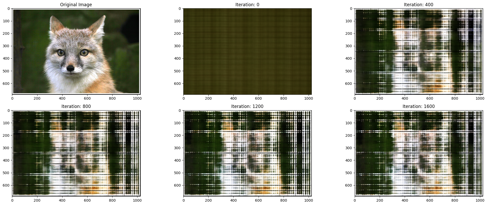 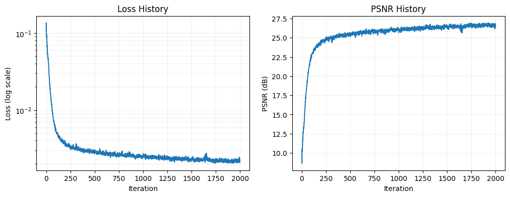In conjuncture with the above arguement, setting L = 15, which is too high, will attenuate high frequency features, which results in the above edgy images, though PSNR is high.
We tried everything we did with another image, which is sampled from Pink Floyd's Meddle album cover, the results are below in sequential order as for this test image:
To create rays from cameras, we first need to find the transformation from camera coordinates to the world coordinates. Any rigid body transformation can be represented by a rotation along the intertial axis, and a translation. The below rigid body transformation achieves this. In the dataset, we are given transformations from camera to world coordinates.
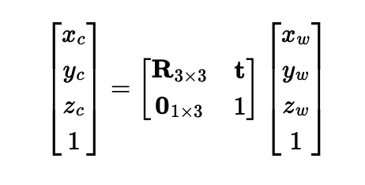For the pinhole camera model with principal point (o_x, o_y) and focal lengths (f_x, f_y) and no shearing, we can define the calibration matrix K as follows:

when we multiply the camera coordinates with the calibration matrix, we formally and intuitively would get the depth s (scalar) multiplied by the pixel coordinates in homogenous coordinates. This implies that in order to get the camera coordinates back, it is enough to multiply LHS by K inverse.
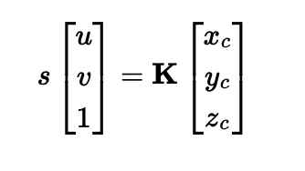In this case, if we have the world to camera matrix defined as the first equation, then the vector quantity:
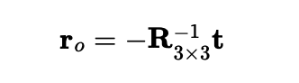Would be the ray to origin of the world frame from the camera point. This makes sense because we rotate the body frame of the camera to point to the world frame first by applying R inverse on the translational component, which is the translation vector pointing to the origin. In this case, the following equation make sense to represent rays from camera to the world frame in a normalized manner. We implement all of these transformations.
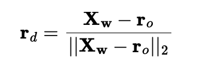To sample rays from images, we first generated a grid of pixel coordinates for all images (all operations suppport batched inputs). Rays are defined by their origins r_o and directions r_d, so we generated this tuple for all the images. Then we offset 0.5 to shift the coordinates to pixel centers (normalization). For each grid coordinate, we compute the ray origin r_o and the ray direction r_d using transformations and camera intrinsics provided by the dataset. We sampled N rays globally across all images. Then we implemented the functionality to sample points along rays. After obtaining the rays (r_o, r_d) we sampled poijts along each ray in 3D space. The samplig method included sampling values uniformly between near = 2.0 and far = 6.0, and a perturbation, which is adding random ofsets to the values during training to ensure every location on the ray is covered. Then the sampled point would be p = r_o + t * r_d. We then incorporated this logic to the Dataloader and the preimplemented function to visualize rays which resulted in the following image (pretty cool)!
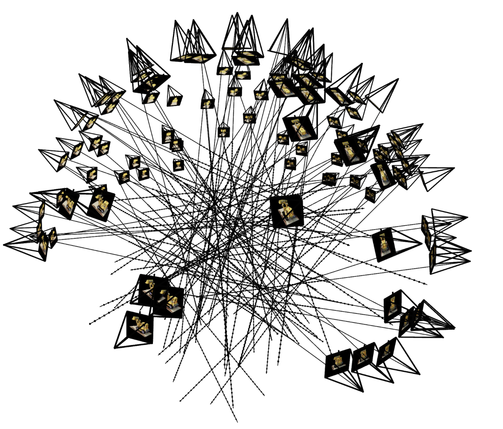